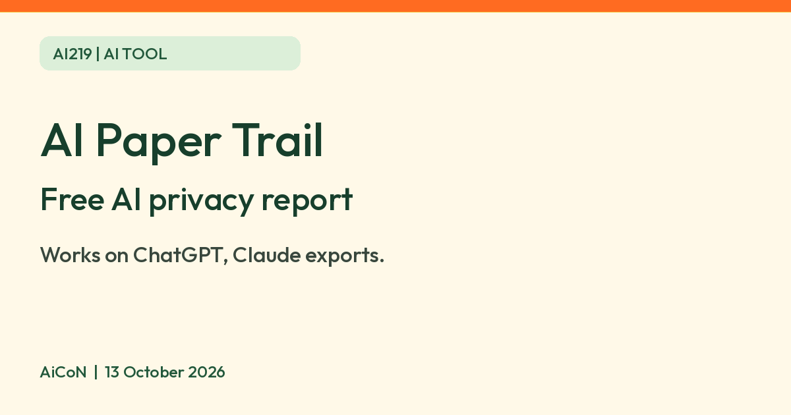

Proton AI Paper Trail: a free report on what your ChatGPT or Claude chats reveal
Proton says AI Paper Trail is a free tool: upload your ChatGPT or Claude export and get a private report on what your chats reveal. Check these points before you upload.

Official Proton and Lumo images


Company-supplied illustrations from the same official page, not AiCoN test screenshots. No video with an unverified uploader is included. Consider the sensitivity of your export before uploading.
What it is
AI Paper Trail is a tool from Proton, the Swiss company behind Proton Mail and the Lumo AI assistant. Proton's page says it reads your exported ChatGPT or Claude conversation data and makes a private report on what those chats reveal about you. Proton says the report has four parts: a "Privacy Type" label, an "AI Exposure Score", a list of what the AI knows about you (for example habits, relationships, address), and "My data value", which Proton describes as what your data is worth to an AI provider in dollars. You can also make a shareable report card.
Is it free?
Yes, per Proton. Its page calls AI Paper Trail "a free tool". Proton's page does not say whether you need a Proton account, so we cannot say. It also names no country limits, so India availability is not confirmed.
How it works, per Proton
- Export your conversation data from ChatGPT or Claude.
- Open AI Paper Trail on Proton's site and upload the export file.
- Read your report. Proton says only you see it.
- Proton's page names ChatGPT and Claude exports only. It does not say other chatbots work.
Privacy: think before you upload
- Proton says the data you share with Lumo is deleted as soon as it is analyzed and is never stored on Lumo's servers.
- Your export can hold everything you ever typed, including health, money, work and family details. Uploading it sends all of that to another company. Proton's promise is the vendor's own statement. We did not test it.
- AiCoN advice: if you try it, look through your export first. If it holds information you cannot share, do not upload it. Proton's page does not confirm whether edited exports are supported. Do not use a work account's export without permission.
Read the claims with care
- The page also says that ChatGPT, Claude and Gemini keep your chats, may use them to train models and may share data. That is Proton's description. Each service has its own settings, and we did not check them here.
- The Exposure Score and the dollar "data value" are Proton's own measures. Proton does not explain how they are worked out on the page we read.
- The tool comes from Lumo, which Proton sells as a private AI assistant, so it also promotes Proton's own product.
Frequently asked questions
Does it work with Gemini or Meta AI?
Proton's page names ChatGPT and Claude only.
Do I need to pay?
Proton calls it a free tool. It does not mention a paid version of AI Paper Trail.
What changed since this post?
Proton's official page rechecked on 13 October 2026. It still calls this free, names ChatGPT and Claude exports and claims deletion after analysis. Account need and India availability are unconfirmed. Other AI retention claims, privacy promises and report measures are Proton's descriptions, not independent checks. No account, export upload, report or deletion test performed.
Related: AiCoN guide to Proton Lumo 2.
Sources: Proton: AI Paper Trail. Checked 13 October 2026.